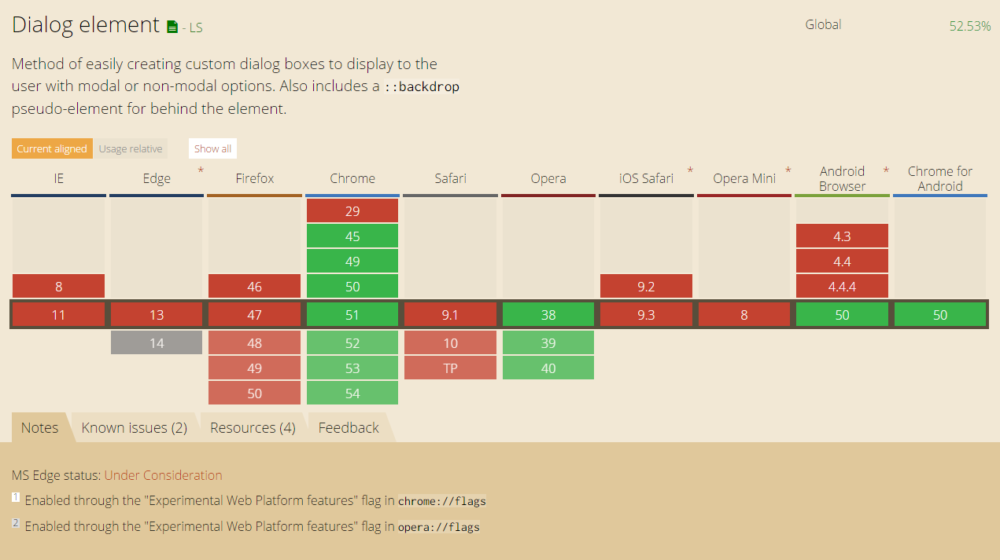

The dialog element
I was grinding my teeth on a z-index problem today. I needed to cover the entire webpage to show something was happening and nothing else was to interrupt. Some elements (for whatever reasons) were poking through the overlay and nothing seemed to fix my problem with the plain old position: fixed element I was using to cover the page.
So after getting fed up with looking for possible fixes I spent a bit of time looking for alternatives and came across the <dialog> element.
First things first, the <dialog> element isn't all that well supported. At the time or writing, support looks like this.

Chrome and Opera have support for it, the rest is out... Sad times. BUT! I am very lucky, I only need to support a few versions of Chromium (what Chrome is based on) running in kiosk mode and I can use the <dialog> element.
So, what is this <dialog> all about? The full spec is here but read on for the quick and easy.
The <dialog> element is just a plain old HTML element and can be used as such.
It has some handy properties as well. There is the open attribute. Putting it on the element will make the dialog show itself by default.
The real power lies in its very simple API you can use in your scripts. It has an show, showModal and close function. To get access to the elements API, all you need is select the element.
var popup = document.getElementById("myDialog");
The show and close functions do exactly what you'd expect, they show and hide the dialog.
var someElement = document.getElementById("thing").addEventListener("click", function () { popup.show(); // or .close() or .showModal() });
The showModal function adds an overlay below the dialog but above every other element in the DOM making it impossible to interact with other elements on the page.
As far as styling goes, the dialog is just an HTML element and can be styled as such. One notable exception to this is the ::backdrop selector that you can apply to the dialog element. This controls the look of the overlay that is created when the dialog is displaying as a modal dialog.
.yourDialog::backdrop { background-color: rgba(0, 0, 0, .25); }
It has made creation of popups and dialogs a whole lot easier for me but browser support need to catch up big time before we can start using this in the wild. There are polyfills to fill the gap, but it's a really big gap with only a handful of browsers offering support but that's a call you'll have to make for yourself.
To wrap it all up, here is a simple demo (that will not work in some browsers - use Chrome) showing off the basic usage of a dialog. Have fun!
See the Pen Simple dialog demo by Sander Harrewijnen (@Harrewarre) on CodePen.